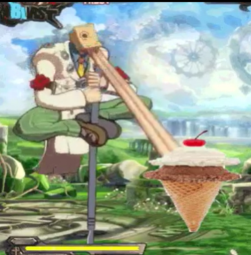

I am Ismael, and this is my journey through the world of chemical romance. #WhatHeSaid Jk that was thr autofill, but I love music and currently am learning more about it as I learn the bass guitar. Evidently, I love My Chemical Romance but I truly am a fan of all kinds of music. I do tend to favor alternative rock and/or punk but music is as fluid as one's mood. Sometimes I need to balance my tastes by bringing in every flavor, from Soul, RnB, Mexican pop songs, and many other genres. My favorites are most definitely in alternative categories like shoegaze, grunge, punk and all of those kinds of thangs. I also love listening to new music, so I'm open to any suggestions! I'll give anything a try in life. #yolo
